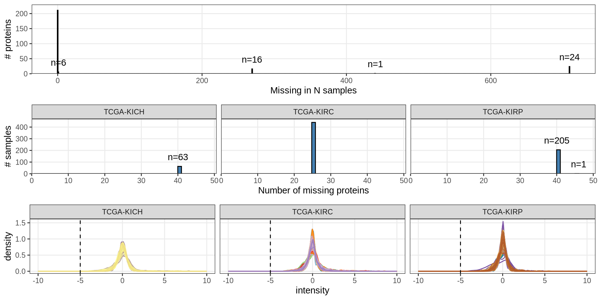
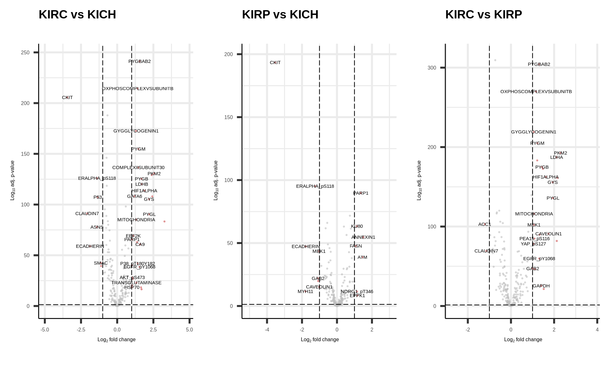
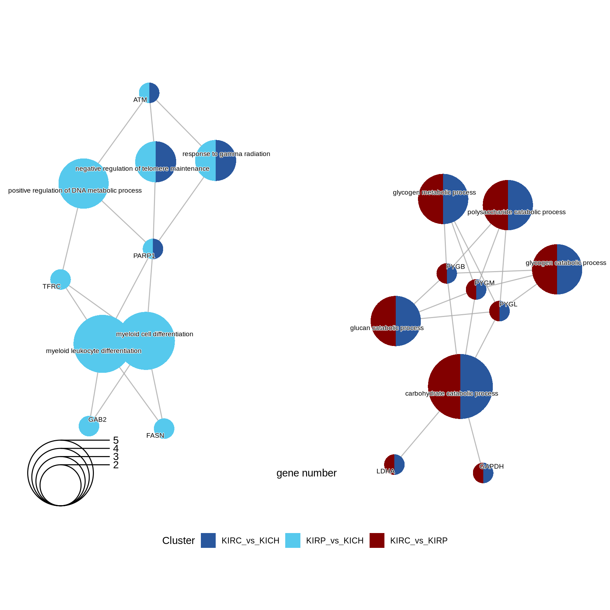
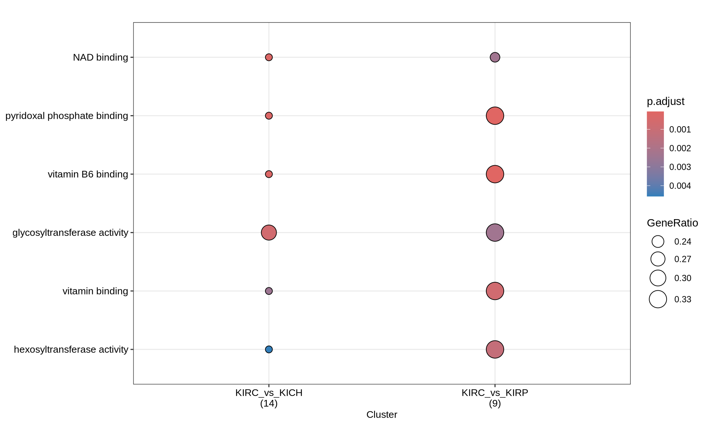
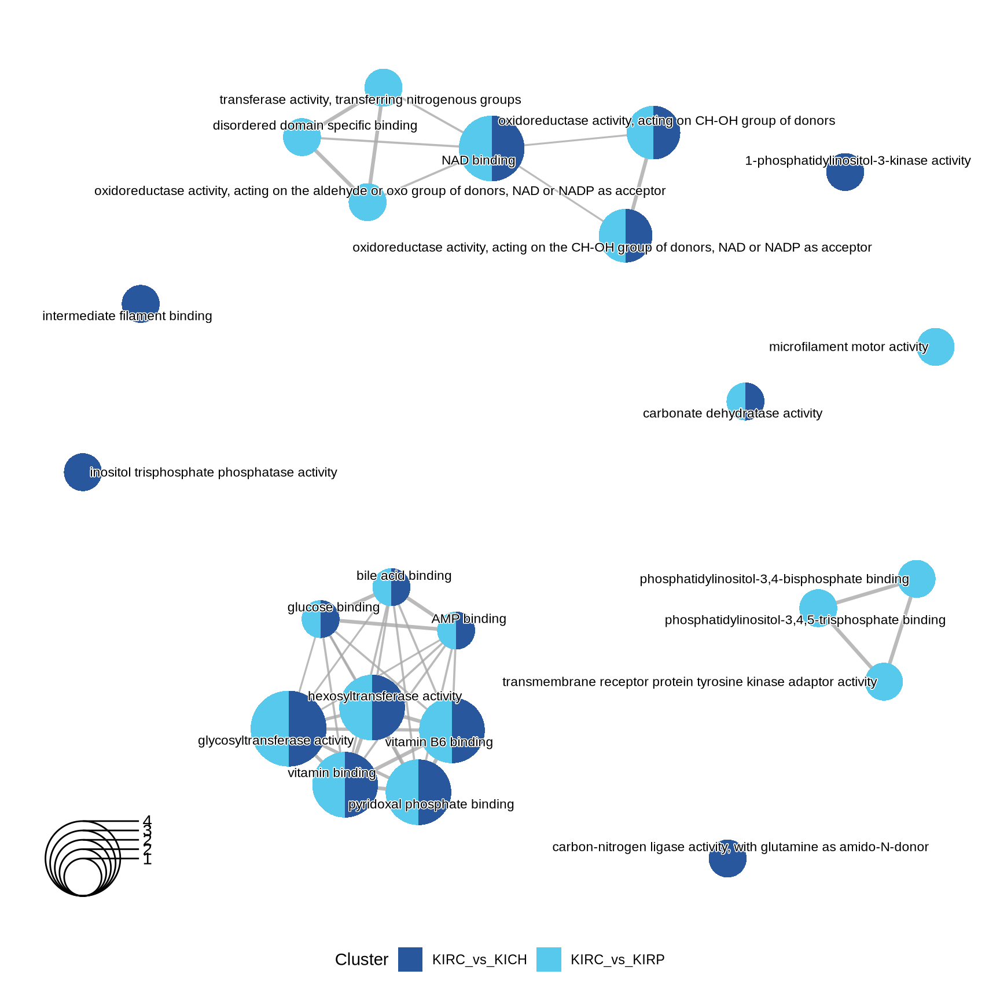

3 Proteomics Analysis
3.1 On this page
Biological insights and take-home messages are at the bottom of the page at Lesson Learnt: Section 3.5.
- Here we investigate the proteomics data across the three Kidney Cancers.
- First, we perform a QC on protein spectra abundance, their distribution across samples and we impute eventual missing values.
- Then, we do some exploratory analyses on samples, gene expression and clinical covariates.
- We then run a formal Differential Protein Abundance analysis to identify proteins that have different expression levels across the three Kidney cancer types.
- We perform Gene Set Enrichment Analyses on the differentially abundant proteins to investigate biological and molecular themes that discriminates between the three Kidney cancer types.
3.2 Proteomics data overview and QC
3.2.1 Spectral counts overview
For TCGA Kidney cancer proteomics data, we will perform analyses similar to the ones performed for the transcriptomics one (see Chapter 2). We first start with an overview of the datasets and QC.
Let’s check the spectral counts distributions across samples, and the protein completeness across samples.
Looking at the distributions, we can conclude that the spectral intensities were already normalized and scaled, since the spectral values are centered around 0 and have a normal distribution.
We have 258 proteins in total, across 709 samples (79.9% of samples had proteomics data).
- 24 proteins were missing in all samples (100% of patients with proteomics data available)
- 1 protein was missing in 440 samples (62.1% of patients with proteomics data available)
- 16 proteins were missing in 269 samples (37.9% of patients with proteomics data available)
- 6 protein were missing in only 1 sample 211 proteins were detected for all patients with proteomics data available)
We can obviously drop the 24 proteins for which we have not spectral counts for none of the samples. For the remaining proteins for which we do not have full occupancy, we will apply a standard imputation strategy.
3.2.2 Data imputation
Missing values imputation for label-free proteomics is a large and complex field of study.
In our Kidney cancer proteomics samples the number of proteins detected is small and the distribution of missing values is oddly discrete. This suggests that some kind of filtering was already applied during the preprocessing steps, together with scaling and normalization of the proteins spectral counts. The absence can therefore as well be ascribed to biological reasons as well, and not only to technical problems with its detection.
To preserve this putative biological signal, I replace in each sample the missing values with the minimum spectral count available in that sample.
Let’s check how the spectral distributions changed.
3.3 Dimesionality Reduction and Dataset Exploration
3.3.1 UMAP on filtered transcriptomics data
Let’s check the samples clustering on a UMAP. We have almost a perfect clustering of the samples in their corresponding cancer subtypes, with just 2 KICH samples clusting with KIRC samples.

3.3.2 Principal Component Analysis (PCA)
As we did for the transcriptomics data (see Chapter 2)., the next step in the Dataset exploration is to perform the Principal Component Analysis.
The first 21 Principal Components capture more than 80% of the variance in the Kidney cancers transcriptomics dataset, with the first two components (PC1 and PC2) capturing a bit more than 40% of the variance.
When we project the samples in the PC1 and PC2, we can see that the PC1 separates KIRC from KICH and KIRP, which instead cluster together. The second component PC2, instead, seems to separate KICH and KIRP samples. The separation between KICH and KIRP samples along component PC2 is clearer in the proteomics data than in the transcriptomics data.


Let’s check the loadings (i.e.: 21 Principal Components capture more than 80% of the variance in the) for the top 4 Principal Components. These indicate which genes are the more responsible to explain the position of the samples along the components, and the direction of this separation.
[[[[ADAPT TO PROTEOMICS RESULTS]]]]
Looking at the top 1% most variable genes (~ 140 genes), the following 5 genes are the top loadings for the first 4 Principal Components:
[[[[ADAPT TO PROTEOMICS RESULTS]]]]
Let’s now check the expression of the five top genes identified with the PCA across the cancer types:

Claudin-7 is a known diagnostic himmunohistochemical marker for classifing chromophobe renal carcinoma (KICH), and indeed seems overexpressed in KICH when compared to KIRC and KIRP.
Let’s check the Pearson correlation with other clinical covariates.
[[[[ADAPT TO PROTEOMICS RESULTS]]]]
Certain histological and molecular subtyping correlates perfectly with PC1 and PC2 (which discriminates KICH) immune infiltrating cells also correlates with PC1 and PC2, and may help to further characterize the subtypes and stratify patients
As we have learnt before (Section 1.3.7), KIRC patients seems to had a worse outcome than KIRP and to have tumors in more advanced stages. PC1 (computed from transcriptomics data) clearly separates KIRC and KIRP samples, and it correlates with tumor histological grade and stage, as well as clinical outcome. This show that we have good correlation between clinical observations and gene espression in Kidney cancers.
sadly, no correlation between the top 5 components and the outcome of therapeutic care.
[[[[ADAPT TO PROTEOMICS RESULTS]]]]

3.4 Differential protein abundance analysis
In addition to cancer type, we saw that age, ethnicity (and race) and age had somewhat a correlation with the cancer types.
We may want to include this covariates in the differential gene expression analysis in order to include their contribution into the model.
print(summary(dt)) KIRC_vs_KICH KIRP_vs_KICH KIRC_vs_KIRP Down 92 89 105 NotSig 37 48 27 Up 105 97 102
[[[[[[[[[[[[[ARE THE GENES/PROTEINS IN THE PCA dge??????]]]]]]]]]]
3.4.1 Identification of differentially expressed proteins


3.4.2 Comparative enrichment analyses across cancer types
ORA vs GSEA:
- Over-Representation Analysis (ORA): It assesses whether the number of genes from a specific pathway in our list of DEGs is greater than expected by chance –> To identify pathways that are significantly over-represented in a given list of DEGs, providing insights into the most affected biological processes by our treatments
- Gene Set Enrichment Analysis (GSEA): It assesses whether the members of a pathway are randomly distributed throughout the ranked list or primarily found at the top or bottom, indicating upregulation or downregulation –> To identify whether specific pathways are upregulated or downregulated across the entire list of genes, providing insight into the global effects of the treatments
prep gene lists
3.4.2.1 GO Biological Process terms


3.4.2.2 GO Cellular Compartments terms



3.4.2.3 GO Molecular Function terms


3.4.2.4 KEGG pathways



3.4.2.5 Reactome pathways


3.5 Lessons Learnts
[[[[PROPER DESCRIPTION OF FINDINGS AND TRANSCRIPTOMICS ENRICHMENTS]]]]
So far, we have learnt:
- A